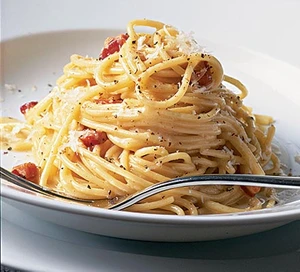

Spaghetti Carbonara

Ultimate spaghetti carbonara recipe
Discover how to make superb spaghetti carbonara.
This cheesy pasta dish is an Italian favourite and
with the right technique, you can make it perfect every time
Ingrediants
- 100g pancetta
- 50g pecorino cheese
- 50g parmesan
- 3 large eggs
- 350g spaghetti
Steps
- Put a large saucepan of water on to boil.
- Finely chop the 100g pancetta, having first removed any rind.
Finely grate 50g pecorino cheese and 50g parmesan and mix them together.
- Beat the 3 large eggs in a medium bowl and season with a little freshly grated black pepper. Set everything aside.
- dd 350g spaghetti and when the water comes back to the boil, cook at a constant simmer for 10 minutes.
- Mix most of the cheese in with the eggs, keeping a small handful back for sprinkling over later.
- Mix it with the spaghetti and enjoy!
Return to main page